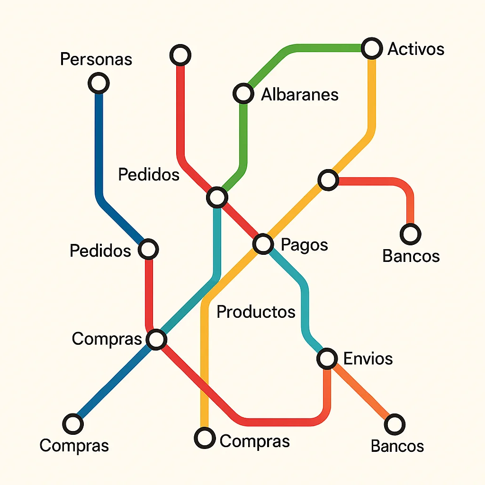

Muchos sistemas se definen como “ERPs relacionales” simplemente porque utilizan una base de datos como PostgreSQL o MySQL. Pero eso no basta. El modelo relacional no es una cuestión de tecnología, sino de diseño, estructura y principios fundamentales.
Edgar F. Codd, creador del modelo relacional, estableció 13 reglas que todo sistema que se declare relacional debería cumplir. Estas reglas van mucho más allá del uso de una base de datos: definen la esencia del tratamiento de los datos como relaciones, el control mediante lenguajes declarativos y el acceso uniforme.
Muchos ERPs modernos, como Odoo, son modulares y extensibles, pero no cumplen estas reglas. Usan una base de datos relacional, sí, pero su estructura de datos es orientada a objetos, con capas intermedias de lógica de negocio que rompen el modelo declarativo y relacional puro.

Cuando decimos “relacional”, lo decimos con conocimiento y respeto por el modelo original. Atria-ERP Relational es un proyecto que lleva la palabra “relacional” en su sentido más puro, tal como lo concibió Codd: datos estructurados, consultables y gestionados desde una base unificada.
Otros sistemas pueden ser útiles, potentes o comerciales. Pero si hablamos de modelo relacional, Atria-ERP no solo cumple: lo demuestra.Como en su día el modelo relacional superó las limitaciones de las bases de datos jerárquicas, Atria-ERP representa una nueva ruptura con los esquemas tradicionales.